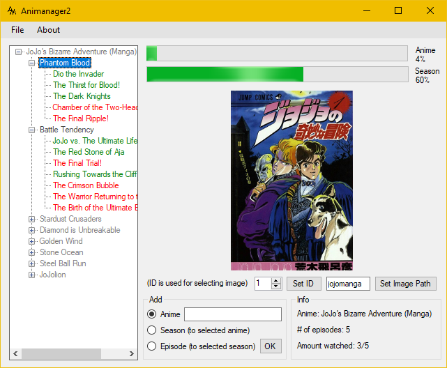

Animanager
file_download
Description
Animanager is a project that I created for my friends. It allows you to keep track of an anime you're watching or a manga you're reading with ease.
Abilities
- - Has custom file system
- - Mark episode as watched or unwatched
- - Image choices for anime and seasons
- - Compact always-on-top viewer
